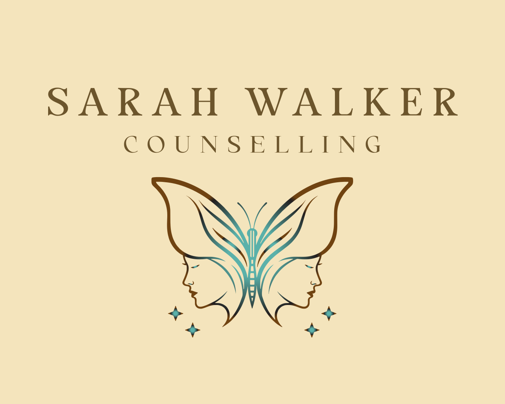

"When I accept myself just as I am, then I can change." - Carl Rogers
Hello I'm Sarah, I am a qualified counsellor dedicated to supporting children and young adults, and I am a registered member of the British Association for Counselling and Psychotherapy (MBACP).
To ensure the highest standard of care, I engage in regular supervision and am committed to ongoing professional development. Adhering to the ethical guidelines set forth by the BACP allows me to maintain a safe and supportive practice for both my clients and myself.
My therapeutic approach is gentle and grounded in Person-Centred principles, allowing clients to lead the sessions in a manner that feels most comfortable to them.
Whether it's through:
I provide a warm, welcoming, and non-judgmental space where young individuals can explore their feelings and discuss the issues that matter to them. Clients can take their time and share at their own pace, without any pressure or specific agenda for each session.
I warmly welcome individuals from all faiths, backgrounds, cultures, as well as those from neurodiverse communities and the LGBTQ+ community. My goal is to foster an atmosphere of openness and non-judgment, ensuring that everyone feels accepted just as they are.
While I do not diagnose, offer solutions or direct advice, my role is to be a supportive presence, walking alongside clients as they navigate challenges such as but not limited to: anxiety, depression, emotional difficulties, low self-esteem, relationship issues or academic pressures. My aim is to create a safe environment where individuals feel truly heard and valued.
Before qualifying as a counsellor, I spent several years working in a corporate desk job. After leaving to start a family, I reflected on my experiences and felt an ongoing unease I couldn't quite articulate. To find clarity, I began my own counselling journey, which provided a safe space to explore my emotions and gain insights into my struggles. This process led to significant personal growth and helped me move forward, where I had previously felt stuck.
Inspired by my transformative experience, I trained to become a counsellor, aiming to create a non-judgmental and authentic environment for others, just as I had experienced.
In our first session, we'll go over our agreement, including confidentiality, safeguarding, and our approach, so you feel well-informed. This session also serves as an introduction to the therapeutic environment. For some children, it might be their first opportunity to have a space dedicated solely to them, allowing them to express themselves openly and start to grasp what therapy could be like.
Children typically require some time to familiarise themselves with a new environment and feel at ease.
Establishing a consistent schedule of sessions can effectively aid this process, allowing them to feel more secure and settled, and enabling them to engage in their own way as time progresses.
Sessions are 50 minutes on the same day and time each week.
I offer in-person counselling in the Brentwood area, as well as online and telephone.
I am based in:
1 & 2 Ashwells Cottages,
Ashwells Road,
Brentwood,
CM15 9SE
If you feel like this is for you or want to find out more, I offer a free no obligation 15-minute phone consultation where we can talk about your needs and address any questions you might have and determine whether I am the right person to support you.
Phone: 07455 187 681
Email: sarahwalkercounselling@gmail.com
£60 for a 50-minute session
In-person
Online
Telephone
I offer short-term and long-term counselling sessions.